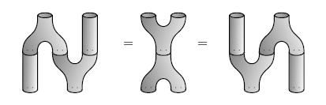

RESEARCH
PAPERS:
CONFERENCES ORGANIZED:
January 2019: AMS Special Session on Hopf Algebras and Tensor Categories
April 2018: Special Session on Tensor Categories and Diagrammatic Methods
January 2018: AMS Special Session on Hopf Algebras: a session in honor of Susan Montgomery
November 2017: Special Session on Tensor Categories: Bridging Algebra, Topology, and Physics
June 2017: Hopf Algebras and Tensor Categories in San Diego
January 2017: AMS Special Session on Hopf Algebras and their Actions
May 2015: Hopf Algebras and Tensor Categories Mini-Meeting
January 2015: AMS Special Session on Quantum Information & Fusion Categories